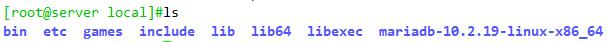
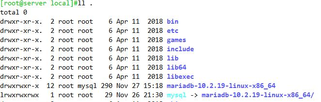
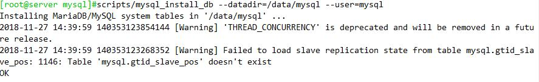
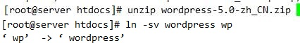

LAMP
CGI：Common Gateway Interface 可以让一个客户端，从网页浏览器通过http服务器向执行在网络服务器上的程序传输数据；CGI描述了客户端和服务器程序之间传输的一种标准
请求流程：
Client -- (httpd) --> httpd -- (cgi) --> application server (program file) -- (mysql) --> mysql
php: 脚本编程语言、嵌入到html中的嵌入式web程序语言基于zend编译成opcode（二进制格式的字节码，重复运行，可省略编译环境）
PHP
配置文件：/etc/php.ini, /etc/php.d/*.ini
配置文件在php解释器启动时被读取
对配置文件的修改生效方法
Modules：重启httpd服务
FastCGI：重启php-fpm服务
/etc/php.ini配置文件格式：
[foo]：Section Header
directive = value
注释符：较新的版本中，已经完全使用;进行注释
#：纯粹的注释信息
;用于注释可启用的directive
php.ini的核心配置选项文档：
http://php.net/manual/zh/ini.core.php
php.ini配置选项列表：
http://php.net/manual/zh/ini.list.php
php的加速器
XCache 收录EPEL源
项目地址
http://xcache.lighttpd.net/
使用mysql扩展连接数据库的测试代码
<?php
$conn = mysql_connect(‘mysqlserver','username','password');
if ($conn) echo "OK";
else echo "Failure"; #echo mysql_error();
mysql_close();
?>
Php使用mysqli扩展连接数据库的测试代码
<?php
$mysqli=new mysqli("mysqlserver",“username",“password");
if(mysqli_connect_errno()){ echo "Failure"; $mysqli=null; exit; }
echo “OK"; $mysqli->close();
?>
php7以上使用pdo扩展连接数据库的测试代码
<?php
$dsn='mysql:host=mysqlhost;dbname=test';
$username=‘root'; $passwd=‘magedu';
$dbh=new PDO($dsn,$username,$passwd); var_dump($dbh);
?>
CentOS 7, lamp (php-fpm)
实验环境：主机用于搭建wordpress
| 主机 | 系统 | ip地址 | 部署服务 |
|---|---|---|---|
| a | CentOS 7 | 192.168.80.10 | apache2.4 |
| b | CentOS 7 | 192.168.80.20 | php-fpm php-mysql |
| c | CentOS 7 | 192.168.80.30 | mariadb |
一、主机a上部署apache
1.在主机a上安装httpd服务
yum install httpd -y
2.检查fcgi模块是否加载
httpd -M | grep fcgi
cat /etc/httpd/conf.modules.d/00-proxy.conf
3.fastcgi配置
vim /etc/httpd/conf/httpd.conf
加二行
<IfModule mime_module>
AddType application/x-httpd-php .php
AddType application/x-httpd-php-source .phps
.......
定位至DirectoryIndex index.html,修改为
<IfModule dir_module>
DirectoryIndex index.php index.html
</IfModule>
3.创建虚拟主机配置文件
vim /etc/httpd/conf.d/vhosts.conf
<VirtualHost 192.168.80.10:80>
DocumentRoot /data/www1/wordpress
ServerName www.a.com
ProxyRequests off
ProxyPassMatch ^/(.*\.php)$ fcgi://192.168.80.20:9000/data/www1/wordpress/$1
</VirtualHost>
<Directory /data/www1/wordpress>
Options none
AllowOverRide none
Require all granted
</Directory>
4.启动httpd服务
systemctl start httpd
systemctl enable httpd
二、在主机b上部署
1.安装php-fpm php-mysql php-mbstring
yum install php-fpm php-mysql php-mbstring -y
2.修改php-fpm配置文件
vim /etc/php-fpm.d/www.conf
listen = 192.168.80.20:9000
listen.allowed_clients = 192.168.80.10
3.创建/var/lib/php/session目录
mkdir -pv /var/lib/php/session #默认/var/lib/php/session目录不存在,所以我们要创建此目录
chown apache:apache /var/lib/php/session #修改属主属组为apache
4.启动php-fpm
systemctl start php-fpm
systemctl enable php-fpm
三、在主机c上部署mariadb
1.安装mariadb-server
yum install mariadb-server -y
2.启动mariadb
systemctl start mariadb
systemctl enable mariadb
3.对mariadb执行安全环境部署
mysql_secure_installation
4.创建wordpress所需的用户及数据库
mysql -uroot -p
MariaDB [(none)]> CREATE DATABASE wpdb;
MariaDB [(none)]> USE wpdb
MariaDB [wpdb]> GRANT ALL ON wpdb to 'wpuser'@'192.168.80.%' IDENTIFIED BY 'wpuser';
四、安装部署应用
因为此次试验是将apache和php-fpm 分开部署的, 用户访问的动态资源请求会直接转到 [192.168.80.20 php-fpm]主机上,因此我们的网站目录也需要部署到192.168.80.20主机上,两主机彼此各有一份
1.在主机a上创建网站目录
mkdir -pv /data/www1/
2.在主机b上创建网站目录
mkdir -pv /data/www1/
3.安装wordpress
1).解压wordpress
wget https://wordpress.org/latest.tar.gz
tar -xf latest.tar.gz
2)将文件复制到网站目录下
cp -a wordpress /data/www1/
3)修改配置文件
cd /data/www1/wordpress
cp wp-config-sample.php wp-config.php
vim wp-config.php
define('DB_NAME', 'wpdb');
define('DB_USER', 'wpuser');
define('DB_PASSWORD', 'wpuser');
define('DB_HOST', '192.168.80.30');
4.将主机a上/data/www1目录推送至主机b上
scp -rp /data/www1/wordpress root@192.168.80.20:/data/www1
5.连接wordpress
6.在b主机安装xcache
[官网]http://xcache.lighttpd.net/wiki/ReleaseArchive
rpm包：来自epel源 php-xcache
编译安装
yum -y install php-devel
下载并解压缩xcache-3.2.0.tar.bz2
phpize
生成编译环境
cd xcache-3.2.0
./configure --enable-xcache --with-php-config=/usr/bin/php-config
make && make install
cp xcache.ini /etc/php.d/
systemctl restart httpd.service php-fpm
CentOS 7, lamp (php模块)
| 主机 | 系统 | ip地址 | 部署服务 |
|---|---|---|---|
| a | CentOS 7 | 192.168.80.10 | apache php php-mysql |
| c | CentOS 7 | 192.168.80.30 | mariadb |
1.在主机a上安装httpd服务
yum install httpd php php-mysql
1)建立测试页面
vim /var/www/html/index.php
<?php
phpinfo();
?>
vim /var/www/html/test.php
<?php
try {
$user='test';
$pass='123456';
$dbh = new PDO('mysql:host=192.168.80.30;dbname=mysql', $user, $pass);
foreach($dbh->query('SELECT user,host,password from user') as $row) {
print_r($row);
}
$dbh = null;
} catch (PDOException $e) {
print "Error!: " . $e->getMessage() . "<br/>";
die();
}
?>
2)部署phpmyadmin
解压缩phpmyadmin
3)在a主机安装phpmyadmin缺少的包，php-mbstring、php-mcrypt
4）拷贝示例文件并编辑
cd /var/www/html/pma
cp config.sample.inc.php config.inc.php
vim config.inc.php
2.在c主机
yum install mariadb-server
3.测试php的连接
4.授权一个测试用户，并测试mariadb的连接
MariaDB [wpdb]> GRANT select ON *.* to 'test'@'192.168.80.%' IDENTIFIED BY '123456';
5测试phpmyadmin的可用性
centos7上编译安装LAMP
准备编译环境
1.新建src目录
mkdir /src
编译apache
yum groupinstall "Development tools"
yum install pcre-devel openssl-devel expat-devel gcc -y
apr和apr-util是httpd2.4以后的版本所需要的插件
1 准备apache
useradd -r -s /sbin/nologin apache
2.编译,在src目录下
cd /src
tar xf httpd-2.4.37.tar.bz2
tar xf apr-1.6.5.tar.bz2
tar xf apr-util-1.6.1.tar.bz
将插件放入httpd目录下
mv apr-1.6.5 httpd-2.4.37/srclib/apr
mv apr-util-1.6.1 httpd-2.4.37/srclib/apr-util
3.配置
cd httpd-2.4.37/
./configure \
--prefix=/usr/local/httpd \
--enable-so \
--enable-ssl \
--enable-cgi \
--enable-rewrite \
--with-zlib \
--with-pcre \
--with-included-apr \
--enable-modules=most \
--enable-mpms-shared=all \
--with-mpm=prefork
make -j 2 && make install #-j指定cpu线程数量
4.将httpd服务添加到系统服务
vim /usr/local/httpd/conf/httpd.conf
修改
User apache
Group apache
cp /usr/local/httpd/bin/apachectl /etc/init.d/httpd
vi /etc/init.d/httpd
添加以下两行（注意，“#”不能省略）：
#chkconfig: 35 85 21 #运行级别 启动优先级 关闭优先级
#description: Apache server
5. 导出环境变量
echo 'PATH=/usr/local/httpd/bin:$PATH' > /etc/profile.d/httpd.sh
. /etc/profile.d/httpd.sh
6.加入服务管理，并启动
chkconfig --add httpd
service httpd start | systemctl start httpd
ss -tnl | grep 80
7.编辑虚拟主机
vim /usr/local/httpd/conf/extra/httpd-vhosts.conf
<VirtualHost *:80>
DirectoryIndex index.php
ServerName wp.test.com
DocumentRoot "/usr/local/httpd/htdocs/wp"
ErrorLog "logs/wp.test.com-error_log"
CustomLog "logs/wp.test.com-access_log" combined
ProxyRequests Off
ProxyPassMatch ^/(.*\.php(/.*)?)$ unix:/usr/local/php/fpm.sock|fcgi://127.0.0.1:9000/usr/local/httpd/htdocs/wp/
</VirtualHost>
<Directory '/usr/local/httpd/htdocs/wp'>
Options None
AllowOverride None
Require all granted
</Directory>
编译php
基于php模块方式
libxml2-devel bzip2-devel libmcrypt-devel (epel)
1编译，（不同版本）
1）.编译安装php-5.6 (与mariadb不在同一主机需安装 mysql-libs mysql-devel)
cd php-5.6.37
./configure --prefix=/usr/local/php --with-mysql --with-openssl --with-mysqli --enable-mbstring --with-png-dir --with-jpeg-dir --with-freetype-dir --with-zlib --with-libxml-dir=/usr --enable-xml --enable-sockets --with-apxs2=/usr/local/httpd/bin/apxs --with-mcrypt --with-config-file-path=/usr/local/php --with-config-file-scan-dir=/usr/local/php.d --with-bz2
make && make install
2）.编译安装php-7.1.7
./configure --prefix=/usr/local/php --enable-mysqlnd --with-mysqli=mysqlnd --with-openssl --with-pdo-mysql=mysqlnd --enable-mbstring --with-freetype-dir --with-jpeg-dir --with-png-dir --with-zlib --with-libxml-dir=/usr --enable-xml --enable-sockets --with-apxs2=/usr/local/httpd/bin/apxs --with-config-file-path=/usr/local/php --with-config-file-scan-dir=/usr/local/php/php.d --enable-maintainer-zts --disable-fileinfo
注意：php-7.0以上版本使用--enable-mysqlnd --with-mysqli=mysqlnd，原--with-mysql不再支持
make && make install
2.为php提供配置文件
cp /src/php-7.1.18/php.ini-production /usr/local/php/etc/php.ini
3.编辑apache配置文件httpd.conf，以使apache支持php
vim /usr/local/httpd/conf/httpd.conf
1).加二行
<IfModule mime_module>
AddType application/x-httpd-php .php
AddType application/x-httpd-php-source .phps
2). 定位至DirectoryIndex index.html
修改为
<IfModule dir_module>
DirectoryIndex index.php index.html
</IfModule>
4. apachectl restart
基于php-fpm
1.安装编译php-fpm必要的安装包
yum install freetype-devel libmcrypt-devel libxml2-devel libpng-devel libjpeg-devel
useradd -r -s /sbin/nologin apache
2.解压编译
tar xvf php-7.1.7.tar.bz2
cd php-7.1.7/
./configure --prefix=/usr/local/php --enable-mysqlnd --with-mysqli=mysqlnd --with-openssl --with-pdo-mysql=mysqlnd --enable-mbstring --with-freetype-dir --with-jpeg-dir --with-png-dir --with-zlib --with-libxml-dir=/usr --enable-xml --enable-sockets --enable-fpm --with-config-file-path=/usr/local/php --with-config-file-scan-dir=/usr/local/php/php.d --enable-maintainer-zts --disable-fileinfo
3. make && make install
4.配置文件
cp /usr/local/php/etc/php-fpm.conf.default /usr/local/php/etc/php-fpm.conf
cp /usr/local/php/etc/php-fpm.d/www.conf.default /usr/local/php/etc/php-fpm.d/www.conf
cp /src/php-7.1.18/php.ini-production /usr/local/php/etc/php.ini
5.编辑/usr/local/php/etc/php-fpm.d/www.conf
vim /usr/local/php/etc/php-fpm.d/www.conf
[www]
listen.backlog = 511
listen.owner = apache
listen.group = apache
listen.mode = 0660
user = apache
group = apache
listen.allowed_clients = 127.0.0.1,192.168.80.10
listen = 9000
6.复制启动脚本文件至/etc/rc.d/init.d
cp /src/php-7.1.18/sapi/fpm/init.d.php-fpm /etc/init.d/php-fpm
chmod +x /etc/init.d/php-fpm
chkconfig --add php-fpm
vim /etc/init.d/php-fpm
添加
#！/bin/bash
#chkconfig: 35 86 22
#description: php-fpm
.....
7. 编辑apache配置文件httpd.conf，以使apache支持php
vim /usr/local/httpd/conf/httpd.conf
取消下面两行的注释
LoadModule proxy_module modules/mod_proxy.so
LoadModule proxy_fcgi_module modules/mod_proxy_fcgi.so
加二行
<IfModule mime_module>
AddType application/x-httpd-php .php
AddType application/x-httpd-php-source .phps
修改下面行
<IfModule dir_module>
DirectoryIndex index.php index.html
</IfModule>
apachectl restart
7.启动
systemctl start php-fpm
mariadb
1. 准备用户
groupadd -r -g 306 mysql
useradd -r -g 306 -u 306 –s /sbin/nologin mysql
2.解压二进制

3.准备数据目录，建议使用逻辑卷
install -d /data/ll -o mysql -g mysql
4.创建mysql的软链接
ln -sv mariadb-VERSION mysql
chown -R root:mysql /usr/local/mysql/

5. 准备配置文件
cp /usr/local/mysql/support-files/my-huge.cnf /etc/my.cnf
vim /ect/my.cnf
[mysqld]中添加三个选项：
datadir = /data/mysql
innodb_file_per_table = on
skip_name_resolve = on 禁止主机名解析，建议使用
6.添加环境变量
echo 'PATH=/usr/local/mysql/bin/:$PATH'> /etc/profile.d/mysql.sh
. /etc/profile.d/mysql.sh
7.初始化数据库文件
scripts/mysql_install_db --datadir=/data/mysql --user=mysql

8.准备服务脚本，并启动
cp support-files/mysql.server /etc/init.d/mysqld
chkconfig --add mysqld
service mysqld start
9.安全初始化
/user/local/mysql/bin/mysql_secure_installation
安装成功信息
[root@server ~]#mysqladmin --version
mysqladmin Ver 9.1 Distrib 10.2.19-MariaDB, for Linux on x86_64
拷贝示例文件并编辑
部署wordpress
(1). 解压缩wordpress

（2）拷贝示例文件并编辑
cd wp
cp wp-config.sample.php wp-config.php
vim wp-config.php
(3)在mariadb上面创建wordprss数据库及账户
CREATE DATABASE wordprss CHARACT SET=utf8 COLLATE=utf8_general_ci;
grant all on wordpress.* to 'wpuer'@'192.168.80.%' identified by '123456';
(4). 测试wordpress的可用